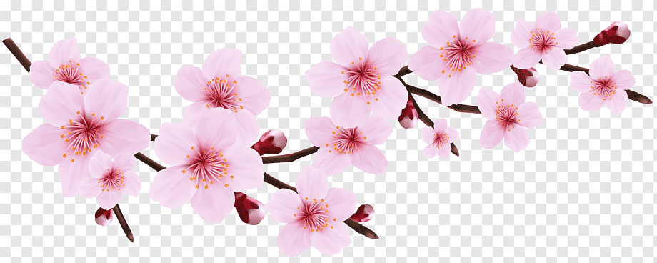

Discover the place
Welcome to Japan, where ancient traditions meet modern vibrance. Cherry blossoms sway in the breeze, and serene temples rise among majestic mountains. From Tokyo's lively streets to Kyoto's tranquil beauty, every moment reveals a rich tapestry of culture. Discover the enchantment of this archipelago, where beauty and history intertwine.


Discover the people
Japanese people are known for their politeness, respect for tradition, and strong sense of community. They blend modernity with cultural heritage, valuing hospitality and harmony in social interactions. With a rich history and vibrant culture, Japan has a dynamic society that balances innovation and tradition.